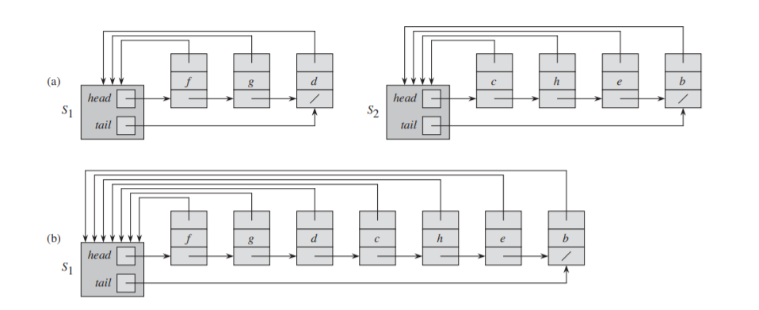
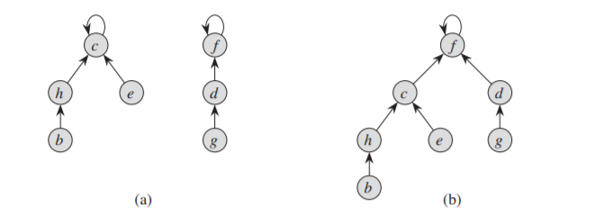

8.Disjoint-Set
1. 不相交集合概述
一些应用涉及把 $n$ 个元素分成一组不相交的集合，之后不断进行合并两个集合与寻找给顶元素的唯一集合两种操作。不相交集合 (disjoint-set, 或称并查集, union-find set) 是支持上述情形的一种数据结果，它有三种操作：
- MAKE-SET(x): 建立一个新的集合，它的唯一成员是 x；
- UNION(x, y): 将包含 x 和 y 的两个集合 Sx 和 Sy 合并成一个集合。
- FIND-SET(x): 返回集合 Sx 的代表。
定义不相交集合运行时间的参数：
- $n$ : MAKE-SET 操作的次数，并且假设这 $n$ 个操作总是最先被执行；
- $m$ : MAKE-SET、UNION 和 FIND-SET 的总次数。
2. 链表表示

用这种方法表示，MAKE-SET 和 FIND-SET 都只需要 $O(1)$ 时间，但由于 UNION 需要更新指向头结点的指针，最坏情况下 $m$ 个操作总时间为 $\Theta(n^2)$。如果在合并时让结点数少的链表被合并，则每个结点的指针最多被更新 $\lceil \lg n \rceil$ 次，因此总时间为 $O(m + n\lg n)$。
3. 有根树表示

树中每个结点代表一个成员，每棵树代表一个集合，每个成员仅指向父结点，每棵树的根是集合的代表，并且是其自己的父结点。则三种操作分别对应：
- MAKE-SET: 令某结点指向自己；
- FIND-SET: 沿指针上溯到根；
- UNION: 让一棵树的根指向另一棵树的根。
1 2 3 4 5 6 7 8 9 10 11 12 | void makeset() { for (int i = 0; i < MAXN; ++i) nodes[i] = i; } int find(int x) { return (nodes[x] == x) ? x : find(nodes[x]); } void merge(int x, int y) { nodes[find(x)] = find(y); } |
(1). 启发策略
① 按秩合并 (union by rank)
使用类似于链表表示但更易于分析的启发式方法，每个结点额外维护一个秩 $\small rank$，表示该结点高度的一个上界。
- 通过 MAKE-SET 创建一个单元素集合时，每个结点的初始秩为 $0$；
- 即使采用路径压缩，每个 FIND-SET 操作也不改变任何秩；
- 通过 UNION 合并两棵有根树时：
- 如果两根的秩不同，则大秩根称为小秩根的父结点，秩的值不变；
- 如果两根的秩相等，任选一个作为新根，并令它的秩加一。
1 2 3 4 5 6 7 8 9 10 | void merge(int x, int y) { int rx = find(x), ry = find(y); if (rank[rx] > rank[ry]) { nodes[ry] = rx; } else { nodes[rx] = ry; if (rank[rx] == rank[ry]) ++rank[ry]; } } |
② 路径压缩 (path compression)
即在 FIND-SET 操作中，使查找路径上每个结点指向根，且不改变任何结点的秩。
1 2 3 | int find(int x) { return (nodes[x] == x) ? x : (nodes[x] = find(nodes[x])); } |
(2). 运行时间分析
- 单独使用按秩合并：$O(m\lg n)$
- 单用使用路径压缩：设 FIND-SET 操作有 $f$ 个，则最坏运行时间为 $O(n+f\cdot (1+\log_{2+f/n}n))$
- 同时使用：最坏运行时间为 $O(m\cdot \alpha(n))$。这里 $\alpha(n)$ 是一个增长非常慢的函数，在任何应用中，都有 $\alpha(n)\leq 4$，因此可以认为运行时间和 $m$ 呈线性关系，但严格来说是超线性的。